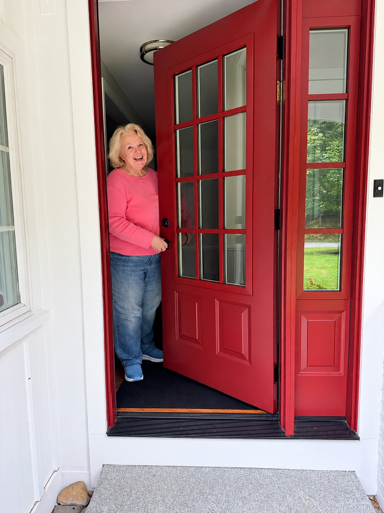

Flourish At Home
Supporting Senior Independence
Flourish At Home provides non-medical practical, personal support for seniors who want to continue living independently in their own homes. We are not a franchise, which means there are no rigid formulas or one-size-fits-all services. We can adapt to what you actually need.

Locations
Areas of Service
A Personal Approach
Support that fits real life.
Background
Over 35 years of social work experience across probation, social services, home care, hospice, and senior living.
Approach
Practical, non-medical support shaped around each person’s needs, independence, privacy, and right to make their own choices.
Experience
Seventeen years focused primarily on supporting older adults in the community, with a strong emphasis on relationships, dignity, and dependable everyday support.
Flourish At Home
Independence looks different for everyone.